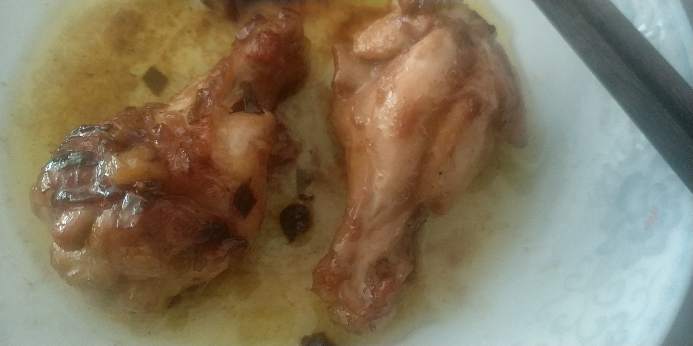

小偏好
- 真的不喜欢外面卖的熟鸡蛋，总觉得吃起来很不放心……但是漂亮的煎鸡蛋又还挺喜欢的，主要是自己煎不出来漂亮的啦，嘻嘻嘻
- 最近喜欢中式食物，浓厚的混杂的酸甜苦辣。
外卖
- 千万注意量，不要吃外卖吃撑自己，浪费也不太好……
和小伙伴们日常的对话里偶尔会有那么一两句值得被记录的，既然值得那么就记录下来吧。也许作为写作的素材，也许作为聊天的谈资，也许仅仅就是不想忘记曾经有过的思想…… 说起来，按我的性子，这样私密的东西是不该public的，但是又想着愿一生正大光明，所思所想无一不可尽对人言。那么放在这里又何妨呢？
由于肺炎超乎想象的影响力，大二的寒假在家里呆了三个月。在这期间，充分享受来自亲爹琴妈的溺爱，真·十指不沾阳春水，从来不做家务事没做过一餐饭没洗过一次碗。我有理由相信这样的日子绝对是人生巅峰了…… 然后呢，我的好日子过到了老爸老妈都复工复产去了的时候，我再度成为了没人管的小可怜，得操心一下自己的吃饭问题了。 以上，就是这篇文章的背景情景。记录一下自己下厨get到的知识点。
饺子主要是煮久了容易煮破，煮的时间过短又怕饺子里的肉没熟（是的我都干过QAQ）。 技巧是在煮饺子的水快要沸腾的时候加点冷水进去。 另外饺子最好在冷水的时候就加进去一起煮，免得刚从冰冻箱里拿出来的冰饺子和沸水反应过激烈弄破皮，也可加长饺子的受热时间。
只做了两只鸡翅根，卖相很是不好，但味道居然出乎意料的不错。 犯了两个个傻，一个在于把葱和姜蒜一起在小火烹制之前放了进去，然后葱全糊了，这也是卖相不好的重要原因。 另一个在于焯血水的时候用沸水焯的，这样会导致肉外面熟透了不好入味，里面又没熟，索性红烧的菜有小火烹制的步骤，应该是水蒸气把里面的肉弄熟了。 至于味道还成则是因为是抄糖色这一步还挺成功的，用的是水抄糖色法，比较好控制火候。 嗯，冰冻的肉类在做成食物之前往往需要解冻，直接加到水里加热会导致营养成分流失，比较好的做法是提前一个晚上从冷冻箱拿出来放进制冷箱。（要在制冷箱里待8h+呀） 还有料酒记得加了水之后再放，如果不希望料酒里的水遇见热油之后溅到脸上的话（我真的不希望QAQ）

又做了一次鸡翅根，这次收汁做的很好呢，汁水味道超好的~
新发现是大蒜煮久了会划掉，谜之觉得好味道的汁水和这个有关系。
然后用油抄糖色可能还是比较好，水真的太容易完全蒸发了，用了给鸡翅根这种表面凹凸不平颇为（超级？）难均匀抄糖色的食材来说不太方便。
另外小火烹制的时候水放少一点，前一步放了油这一步水还挺难蒸发掉的，水放多了就浪费时间浪费煤气，实在放多了就倒掉吧，减少一点浪费。
虽然没啥依据，但是我直觉觉得焯血水的时候要注意以下在水沸腾前停下来，这一步煮的太透了之后就不进味了。
鸡翅根可以加水小火烹制之前稍微煎焦一点，我喜欢稍微焦一点（真的是一点哦）的口感。
葱可以生吃，反正不会死（就是记得洗干净一点），千万别搅拌，搅拌了就不好看了。
可以放一点老抽，汁水好吃一定也有老抽的功劳。

放了胡萝卜就挺好吃的了，但是用的剩饭太硬了，放饭的时机也稍微晚了一点，导致蛋和饭混合的并不是很均匀。 小技巧在于，胡萝卜（如果有火腿丁的话火腿丁也是）要先弄熟出锅，最好用大火炒比较好吃，之后再入锅和蛋炒饭混合。 还有在炒蛋炒饭的时候最好用小火，让蛋晚一点凝固，和饭充分混合。